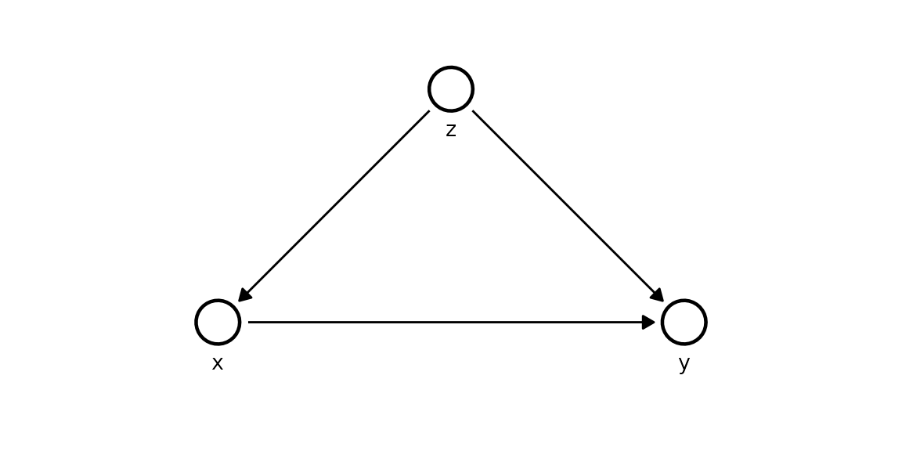
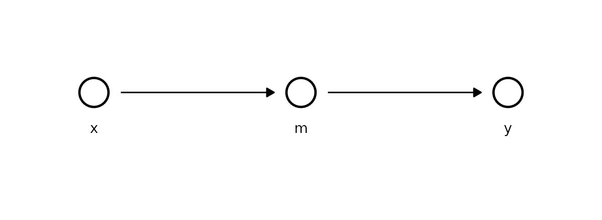
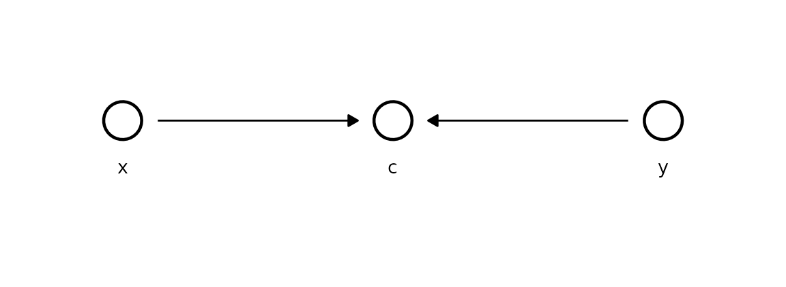
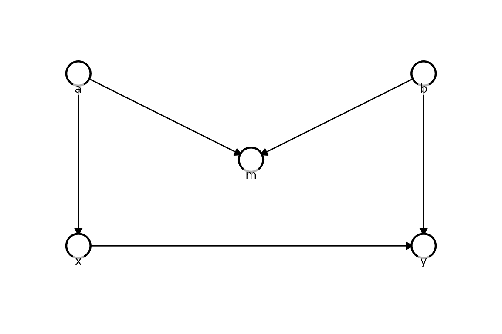
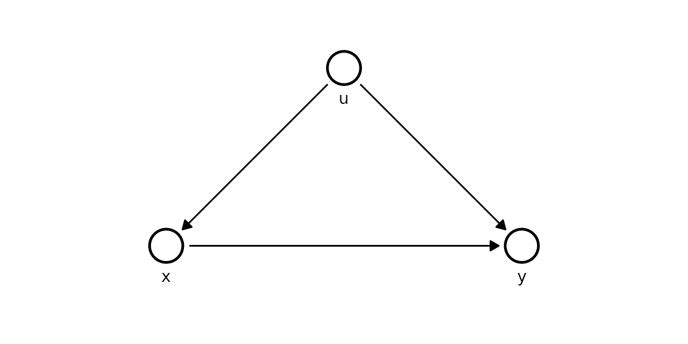

Causal structures: confounder, mediator, collider, M-bias
Source:vignettes/comparison.Rmd
comparison.RmdThis vignette compares naive OLS against Kagu’s do-calculus estimates on four canonical graph structures where conditioning on the wrong set of variables leads to bias - and a fifth where nothing works, to show the method’s limits.
How to read each section. For every structure we
print two ordinary least-squares estimates of the x → y
coefficient - one naive (y ~ x) and one
adjusted (y ~ x + ...) - then Kagu’s
interventional estimate as a tidy table. In that table mean
is the posterior mean effect and
hdi_lower/hdi_upper bound the 90% highest
density interval (the range containing 90% of the posterior probability
- the credible values). The lesson each time: OLS is right only with the
correct adjustment set, which you can only know from the causal
structure; Kagu reads that structure off the DAG and applies the
do-operator directly.
1 - Confounder
z → x → y
z → yThe confounder z causes both x and
y. Naive OLS of y ~ x without adjusting for
z is biased; Kagu uses the full structural model.
True effect of x on y:
+1.5.
z <- rnorm(N)
x <- 1.0 * z + rnorm(N, sd = 0.5)
y <- 1.5 * x + 1.0 * z + rnorm(N, sd = 0.5)
df_confounder <- data.frame(z = z, x = x, y = y)
cat("OLS (naive): ", coef(lm(y ~ x, df_confounder))[["x"]], "\n")
#> OLS (naive): 2.297737
cat("OLS (adjusted):", coef(lm(y ~ x + z, df_confounder))[["x"]], "\n")
#> OLS (adjusted): 1.500995
model_confounder <- KaguModel$new(dag = list(z = c(), x = c("z"), y = c("x", "z")))
model_confounder$fit(df_confounder)
model_confounder$effects("x", "y", values = c(0, 1))$summary()
#> # A tibble: 1 × 8
#> source target from to mean sd hdi_lower hdi_upper
#> <chr> <chr> <dbl> <dbl> <dbl> <dbl> <dbl> <dbl>
#> 1 x y 0 1 1.51 0.0463 1.43 1.58Notice the naive OLS estimate sits well above 1.5 - the confounding
path x ← z → y leaks association into the slope. The
adjusted OLS is correct here only because we happened to
condition on z. Kagu’s table recovers ≈ 1.5 with a 90% HDI
comfortably around the truth, because the structural model represents
z as a common cause and the do-operator severs the incoming
edge to x.
2 - Mediator
x → m → yThe mediator m lies on the causal path. Naive OLS of
y ~ x + m blocks the path and gives a biased (near-zero)
estimate of the total effect.
True total effect of x on y:
−1.6 (= 0.8 × −2).
x <- rnorm(N)
m <- 0.8 * x + rnorm(N, sd = 0.5)
y <- -2.0 * m + rnorm(N, sd = 0.5)
df_mediator <- data.frame(x = x, m = m, y = y)
cat("OLS (naive): ", coef(lm(y ~ x, df_mediator))[["x"]], "\n")
#> OLS (naive): -1.610851
cat("OLS (adjusted):", coef(lm(y ~ x + m, df_mediator))[["x"]], "\n")
#> OLS (adjusted): 0.02841504
model_mediator <- KaguModel$new(dag = list(x = c(), m = c("x"), y = c("m")))
model_mediator$fit(df_mediator)
model_mediator$effects("x", "y", values = c(0, 1))$summary()
#> # A tibble: 1 × 8
#> source target from to mean sd hdi_lower hdi_upper
#> <chr> <chr> <dbl> <dbl> <dbl> <dbl> <dbl> <dbl>
#> 1 x y 0 1 -1.65 0.0598 -1.76 -1.56Here the roles flip: naive OLS is correct and
adjusted OLS is biased. Adding m to the regression
conditions on the mediator and blocks the very path the effect travels
along, collapsing the estimate toward zero. Kagu propagates through
m automatically, so its table recovers the total effect ≈
−1.6 - you never have to reason about which covariates to include.
3 - Collider
x → c ← yThe collider c has two causes. x and
y are independent - the true effect of x on
y is 0. Conditioning on c
opens a spurious path and induces bias.
x <- rnorm(N)
y <- rnorm(N)
c <- 0.7 * x + 0.7 * y + rnorm(N, sd = 0.5)
df_collider <- data.frame(x = x, y = y, c = c)
cat("OLS (naive): ", coef(lm(y ~ x, df_collider))[["x"]], "\n")
#> OLS (naive): -0.03820014
cat("OLS (adjusted):", coef(lm(y ~ x + c, df_collider))[["x"]], "\n")
#> OLS (adjusted): -0.6685109
model_collider <- KaguModel$new(dag = list(x = c(), y = c(), c = c("x", "y")))
model_collider$fit(df_collider)
model_collider$effects("x", "y")$summary()
#> # A tibble: 1 × 8
#> source target from to mean sd hdi_lower hdi_upper
#> <chr> <chr> <dbl> <dbl> <dbl> <dbl> <dbl> <dbl>
#> 1 x y 0 0 0 0 0 0Naive OLS is correct (≈ 0), but adjusting for the collider
c induces a spurious association - conditioning on a common
effect makes its causes appear related. Kagu returns an effect whose HDI
straddles zero, because x has no directed path to
y in the DAG and the propagation simply finds nothing to
carry.
4 - M-bias
a → x b → y
a → m ← bm is a collider on a non-causal path. The true effect of
x on y is +1.0. Conditioning
on m opens a spurious path via a and
b, biasing a naive adjusted OLS estimate.
a <- rnorm(N)
b <- rnorm(N)
x <- 1.0 * a + rnorm(N, sd = 0.5)
y <- 1.0 * x + 1.0 * b + rnorm(N, sd = 0.5)
m <- 0.7 * a + 0.7 * b + rnorm(N, sd = 0.5)
df_mbias <- data.frame(a = a, b = b, x = x, y = y, m = m)
cat("OLS (naive): ", coef(lm(y ~ x, df_mbias))[["x"]], "\n")
#> OLS (naive): 0.9261762
cat("OLS (adjusted):", coef(lm(y ~ x + m, df_mbias))[["x"]], "\n")
#> OLS (adjusted): 0.4620789
model_mbias <- KaguModel$new(dag = list(
a = c(), b = c(),
x = c("a"), y = c("x", "b"),
m = c("a", "b")
))
model_mbias$fit(df_mbias)
model_mbias$plot_dag(node_pos = list(
a = c(0, -2), b = c(0, 2),
m = c(1, 0),
x = c(2, -2), y = c(2, 2)
))
model_mbias$effects("x", "y", values = c(0, 1))$summary()
#> # A tibble: 1 × 8
#> source target from to mean sd hdi_lower hdi_upper
#> <chr> <chr> <dbl> <dbl> <dbl> <dbl> <dbl> <dbl>
#> 1 x y 0 1 1.02 0.0233 0.979 1.06M-bias is the subtle one: m is a pre-treatment
collider, so the usual instinct to “adjust for everything measured
beforehand” backfires. Adjusted OLS opens the path
x ← a → m ← b → y and biases the estimate, while naive OLS
(≈ 1.0) is fine. Kagu, working from the correct structural model, never
adjusts for m during propagation and its table recovers ≈
1.0.
5 - Latent confounder (where everything fails)
u → x → y
u → y (u is unobserved)So far the structural model has always won. This example shows where
it cannot, and why that is the honest answer rather than a
shortcoming. The common cause u is now
latent - it drives both x and
y but is never recorded. The true direct effect of
x on y is +1.5.
The structure we wish we could fit - u is the
unobserved common cause:
kagu_plot_dag(
list(u = c(), x = c("u"), y = c("x", "u")),
node_pos = list(u = c(0, 0), x = c(1, -1), y = c(1, 1))
)
u <- rnorm(N) # the hidden confounder
x <- 1.0 * u + rnorm(N, sd = 0.5)
y <- 1.5 * x + 1.0 * u + rnorm(N, sd = 0.5)
df_latent <- data.frame(x = x, y = y) # u is NOT includedWith only x and y recorded, the only
regression we can run is the naive one - there is no u
column to adjust for:
cat("OLS (naive): ", coef(lm(y ~ x, df_latent))[["x"]], "\n")
#> OLS (naive): 2.275413
cat("OLS (adjusted): unavailable - 'u' is not measured\n")
#> OLS (adjusted): unavailable - 'u' is not measuredThe naive slope is biased upward, exactly as in the confounder example - but this time there is no adjustment available to repair it.
Can the structural model rescue us? Only if we can supply the confounder. Writing the correct DAG and asking Kagu to fit it fails fast, by design:
model_latent <- KaguModel$new(dag = list(u = c(), x = c("u"), y = c("x", "u")))
model_latent$fit(df_latent)
#> Error in `.check_data_nodes()`:
#> ! DAG node "u" is not present in `data`.
#> ℹ If this variable was simply left out, add it as a column and re-fit.
#> ! If it is latent - an unmeasured common cause, for instance - Kagu cannot
#> estimate its mechanism, because there are no observations to condition on.
#> ℹ Unobserved confounding biases every effect that flows through the missing
#> node, and no amount of modelling recovers it from the data alone. Where a
#> confounder is truly latent, establish that your target effect is identifiable
#> (e.g. via an instrument, a valid adjustment set, or a front-door path) before
#> trusting the estimates.Kagu refuses to invent data for an unmeasured node, and the message
spells out the consequence. The alternative is to drop u
from the DAG so the model fits - but then it is structurally identical
to the naive regression, and just as biased:
model_latent_naive <- KaguModel$new(dag = list(x = c(), y = c("x")))
model_latent_naive$fit(df_latent)
model_latent_naive$effects("x", "y", values = c(0, 1))$summary()
#> # A tibble: 1 × 8
#> source target from to mean sd hdi_lower hdi_upper
#> <chr> <chr> <dbl> <dbl> <dbl> <dbl> <dbl> <dbl>
#> 1 x y 0 1 2.30 0.0307 2.24 2.34The estimate lands near the inflated OLS value, not the true 1.5, and the HDI does not cover it. This is the key lesson: unobserved confounding cannot be undone from the data alone. Neither regression nor a graphical model recovers the truth when a common cause is missing - the effect is simply not identifiable from these variables. The remedies all live outside the dataset: measure the confounder, find a valid instrument, or exploit a front-door path.
Summary
| Structure | True effect | OLS (naive) | OLS (adjusted) | Kagu |
|---|---|---|---|---|
| Confounder | +1.5 | Biased ↑ | Correct | ✓ Correct |
| Mediator | −1.6 | Correct | Biased ≈ 0 | ✓ Correct |
| Collider | 0.0 | Correct | Biased ≠ 0 | ✓ Correct |
| M-bias | +1.0 | Correct | Biased | ✓ Correct |
| Latent confounder | +1.5 | Biased ↑ | Unavailable | ⚠ Stops and warns |
OLS is correct only when it happens to use the right adjustment set. Kagu encodes the causal structure explicitly and applies the do-operator - correct by design whenever the effect is identifiable.
Read the last row as a safety feature, not a shortcoming. No method - regression or graphical - can recover an effect that the data simply cannot identify; that is a property of the problem, not of the tool. The difference is in how each one behaves at that boundary. OLS hands back a confident, biased number with no hint that anything is wrong. Kagu instead detects the unmeasured node, stops before fitting, and emits a clear warning explaining why the estimate would be untrustworthy and what to do about it (measure the confounder, find an instrument, or use a front-door path). A loud, actionable error is exactly what you want here - it turns a silent statistical trap into a visible, fixable one.